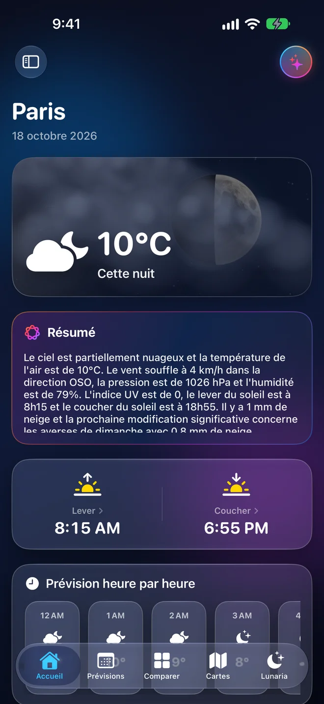

Prévisions d’expert
Heure par heure et jusqu’à 10 jours : température, ressenti, vent, rafales, humidité, pression, UV, précipitations. Touchez une donnée pour plonger dans le détail.
Météo pour iPhone, iPad et Apple Watch
Liquid Weather fusionne les meilleurs modèles météo du monde — AROME, ICON, ARPEGE, GFS, ECMWF — dans une interface en verre liquide, fluide et d’une précision rare.

Explorez l’app
Ce ne sont pas des maquettes : ce sont de vraies captures de Liquid Weather. Faites défiler l’écran, touchez les onglets de la barre du bas, changez de mode — comme sur votre iPhone.
Faites défiler l’écran avec la souris ou le doigt · touchez la barre d’onglets · l’app est affichée en français (7 langues disponibles)
Fonctionnalités
Une seule app pour comprendre le temps qu’il fait, celui qui arrive, et la confiance qu’on peut lui accorder.
Heure par heure et jusqu’à 10 jours : température, ressenti, vent, rafales, humidité, pression, UV, précipitations. Touchez une donnée pour plonger dans le détail.
Vigilances officielles MeteoAlarm de votre zone, notifications utiles et indicateurs de risque lisibles d’un coup d’œil.
Une interface en verre liquide pensée pour iOS : tout répond, tout s’anime, rien ne surcharge.
iPhone, iPad, Apple Watch. Widgets d’écran d’accueil et d’écran verrouillé, complications, tableau de risques sur iPad.
Sous le capot
Les cartes lisent les fichiers ouverts de Météo-France, du DWD et de la NOAA puis les décodent sur votre appareil. Aucun serveur Liquid Weather ne s’interpose entre vous et les données officielles.
Vie privée
Aucune inscription, aucun identifiant : ouvrez l’app et c’est parti.
Pas de publicité, pas de système de suivi publicitaire propre à l’application.
Autorisez-la pour la météo locale, ou choisissez simplement une ville. Vous gardez la main.
Questions fréquentes
Oui. L’application est gratuite, sans publicité ni abonnement.
Les prévisions viennent d’Open-Meteo. Les cartes lisent directement les données ouvertes de Météo-France (AROME, ARPEGE), du DWD (ICON) et de la NOAA (GFS). La Lune est calculée sur l’appareil ; la foudre vient du satellite EUMETSAT ; les vigilances de MeteoAlarm ; le risque feux de Copernicus EFFIS.
Non, et c’est dit clairement dans l’app : ce sont des prévisions de modèles, jamais des observations radar. Seule la couche foudre est une observation satellite.
iPhone, iPad et Apple Watch. Les résumés et l’assistant IA fonctionnent sur les appareils compatibles Apple Intelligence.
Non. Elle est facultative : vous pouvez choisir une ville à la main et modifier l’autorisation à tout moment dans les réglages iOS.
Par e-mail à supportliquidweatherapp@gmail.com, ou depuis la page Assistance. Nous lisons tout.
Une question, une idée, un souci ? Écrivez-nous : nous lisons tout.